ヘッドシェル
AS-1
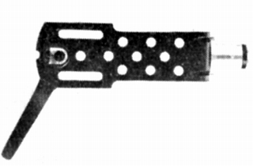
■価格 1,850円
■重量 10g
■備考 アルミプレス加工
2ピン式。通常の1ピンタイプは1,600円。
AS-2
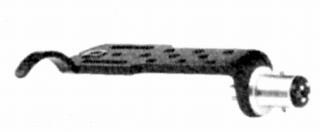
■価格 1,850円
■重量 10g
■備考 アルミプレス加工
2ピン式。通常の1ピンタイプは1,600円。
AS-2P
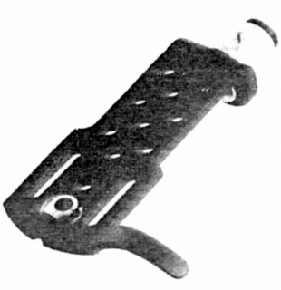
■価格 1,850円
■重量 8.2g
■備考 アルミプレス加工
2ピン式。
AS-2PS
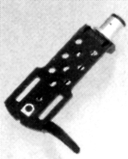
■価格 2,200円
■重量 8.9g
■備考 アルミプレス加工
2ピン式。
CWリード線採用（シェル側はハンダ付け済み）
AS-2PL
(画像なし）
■価格 2,200円
■重量 8g
■備考 ユニバーサル型の軽量タイプ。2ピン式。
AS-3PL
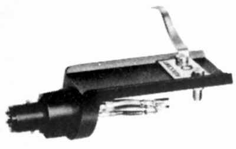
■価格 3,200円
■重量 11g
■備考 アルミプレス加工
パーフェクトロック方式ピン採用。
CWリード線採用（シェル側はハンダ付け済み）
AS-4PL
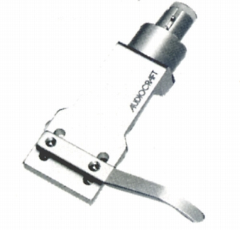
■価格 4,500円
■重量 13.4g
■備考 アルミプレス加工
パーフェクトロック方式ピン採用。
黒仕上げのAS-4PL
BLACK(4,300円）あり
CWリード線採用（シェル側はハンダ付け済み）
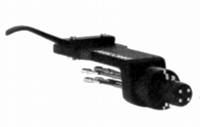
(AS-4PL BLACK)
AS-10K
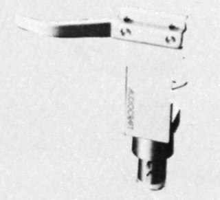
■価格 4,600円
■重量 10g
■備考 アルミ成型削出し一体構造
パーフェクトロック方式ピン採用。
黒仕上げのAS-10K
BLACK(4,400円）あり
AS-12K BLACK
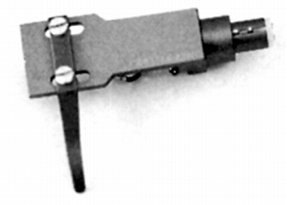
■価格 4,700円
■重量 12g
■備考 アルミ成型削出し一体構造
パーフェクトロック方式ピン採用。CWリード線採用。
シルバータイプ(4,900円）あり
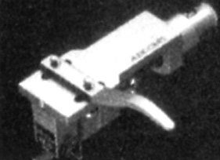
（シルバータイプ）
AS-12KF
■価格 4,900円
■重量 約12g
■備考 アルミ成型削出し一体構造
AS-12Kの姉妹モデルで指かけの形状が違う
パーフェクトロック方式ピン採用。CWリード線採用。
ブラック、シルバータイプあり
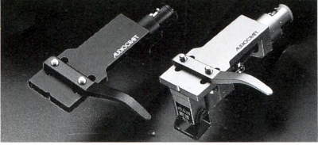
（AS-12KのブラックタイプとAS-12KFのシルバータイプ）
オーディオクラフトのインデックスへ